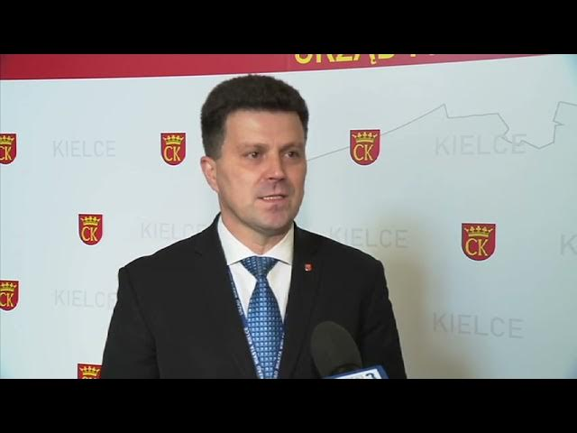

Kielce to piękne miasto
Rzym ::: Kielce ::: Warszawa :::To kielecki oddział terenowy Telewizji Polskiej, będący publicznym nadawcą regionalnym dla województwa świętokrzyskiego. Oferuje lokalne serwisy informacyjne (m.in. "Informacje"), programy publicystyczne, kulturalne i relacje z regionu. Siedziba stacji znajduje się przy ul. Ściegiennego 6A w Kielcach.
Urząd miasta w Kielcach

Urząd miasta w Kielcach z roku na rok pracuje coraz lepiej. W sposób wzorowy, a nawet wzorcowy realizujemy zadania własne oraz rządowe zadania zlecone. Warto dodać iż w czasie pandemii COVID-19 z urzędu stanu cywilnego w Kielcach, korzystają nie tylko mieszkańcy Kielc, ale również mieszkańcy ościennych gmin, rejestrując urodzenia oraz przychodząc do naszego urzędu po odpis aktów zgonu.